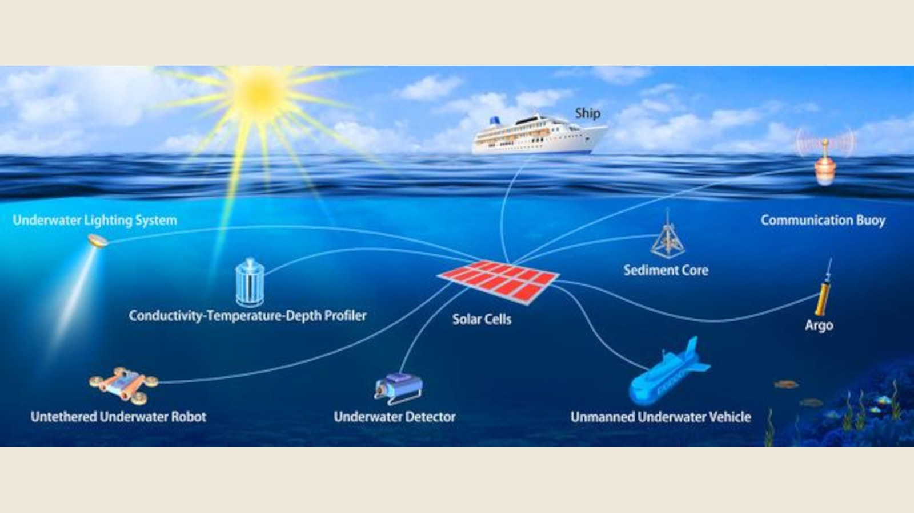

Good morning. Water and solar are supposed to be mortal enemies. Sunlight gets eaten alive the moment it enters the ocean — red light is gone within a couple of meters, and by ten meters down a standard rooftop panel is staring at a thin, blue-green soup that it was never built to read. For decades, that has been the practical end of the conversation: if you need power underwater, you carry batteries, and when the batteries die you haul them back to the surface. A team led by scientists at Yunnan University and the Chinese Academy of Sciences, with Switzerland's EPFL, has now broken that truce. They designed perovskite solar cells with a wide bandgap tuned to the exact colors that survive at depth, walked them out of the lab, lashed them onto an underwater robot, and let them charge batteries at 2, 6 and 10 meters deep in the South China Sea. It is the first demonstration of practical solar power generation at meaningful depth — and it quietly changes the economics of everything we leave submerged.
The paper, "Submerged Solar Harvesting with Wide-Bandgap Perovskites for Autonomous Underwater Energy Systems," was published September 11, 2026 in the Cell Press journal Joule by a team led by Wen-Hua Zhang (Yunnan University and Southwest United Graduate School). The headline number that floated across social media — "35% efficiency under the ocean" — is real but needs a second look: the cells hit 34.71% when measured against the simulated 10-meter underwater spectrum, and a more modest 16.79% (certified) under standard full-sunlight (AM 1.5G) illumination. Neither number is meaningless; they vindicate the central design bet that the team made. The story here is why that bet works, how far the trick extends, and where the unavoidable asterisks are.
What: Yunnan University, the Chinese Academy of Sciences and EPFL built wide-bandgap lead-halide perovskite solar cells (bandgap ~1.96 eV) spectrally matched to the blue-green light that survives in deep water, and validated them at up to 10 m off Weizhou Island in the South China Sea. Large-area modules generated 324 mWh over two submerged hours — enough to charge lithium-ion batteries and light LEDs.
When: Published September 11, 2026 in Joule (Cell Press). Field trials ran off the Weizhou Islands in the South China Sea at 2, 6 and 10 meter depths. Prior underwater-solar studies were all limited to 2 meters or less.
Why it matters: Underwater devices — AUVs, subsea sensors, aquaculture monitors — are bottlenecked by battery endurance. These cells point to a way to keep them charged in place for years. The widely-shared "35% efficiency" figure, however, is measured against the dim underwater spectrum, not full sunlight, and total output (milliwatt-hours) is a trickle compared with any land-based array.
What the team actually did
The starting problem was a gap in the literature that reads almost like a physics error: every prior study of underwater solar cells stopped at water two meters or less deep. As Wen-Hua Zhang put it in the paper's opening salvo, "very few studies have been reported on underwater solar cells, and all of them are focused on very shallow water depths of only two meters or less, a scenario far from catering for requirements of practical application." The team's goal was to bypass the lab-tank games altogether and build cells robust and efficient enough to operate in real seawater, at real depth, for years.
First came a custom lab setup: a simulator with tailored optical filters that reproduces the underwater light spectrum at whatever depth the researchers want to emulate — because testing against standard sunlight tells you nothing about how a cell behaves ten meters down. Then the field trial: large-area perovskite modules were integrated onto a small underwater robot/vehicle and deployed off the Weizhou Islands in the South China Sea at 2, 6 and 10 meters depth. Over two hours of submerged illumination at 10 m, the modules generated 324 mWh — enough in the team's account to charge lithium-ion batteries and light LEDs. At shallower depths the output was lumpier (wave motion and surface chop make light flicker in the top few meters); deeper down the power steadied but, as expected, weakened.
Why the sea breaks the "solar" equation
The physics that flummoxes ordinary panels is brutal and selective. Water is a wavelength filter: red and infrared light are absorbed within centimeters to a few meters; ultraviolet similarly dies quickly. What survives to depth is a narrow blue-to-orange window around 400–600 nm — the same reason the ocean looks blue. By about 10 meters, the remaining sunlight is a dim, color-shifted remnant that a standard silicon cell — engineered for the broad terrestrial solar spectrum — reads catastrophically badly. Much of the photon energy that reaches the panel is simply wasted, because the cell was designed to harvest red and infrared that are already gone.
That mismatch is why the "35% efficiency" headline is simultaneously honest and slippery. Efficiency in photovoltaics is defined relative to the light available to the cell. A rooftop silicon panel converts ~20% of the strong, full-spectrum sunlight it receives; these perovskite cells convert 34.71% of the much dimmer, blue-green underwater light they receive at the simulated 10-meter spectrum — but only 16.79% under standard AM1.5G sunlight. Same hardware, two very different ecosystem labels. The impressive part is not that 34.71% beats silicon's 20% — it beats it on a different measuring stick. The genuinely impressive part is the spectral matching: this cell was designed for the light that actually makes it 10 meters down, and it wastes less of that scarce resource than any conventional panel could.
How the team rebuilt the cell for the deep
The core trick is choosing the right bandgap. A perovskite's bandgap sets which photon colors it can absorb; light with less energy than the gap passes through unused. Rooftop perovskite and silicon cells use a gap around 1.1–1.5 eV tuned for the broad terrestrial spectrum — but underwater, the red and infrared photons they're designed to capture never arrive. The team instead built a lead-halide perovskite with a wide bandgap of roughly 1.96 eV, aligned almost perfectly with the surviving blue-to-orange band, capturing the scarce photons that actually reach 10 meters while skipping the ones that don't exist there. It is, in essence, a cell designed for a different sun.
The durability half is where perovskites usually die, and it's where this study earns its keep. Halide perovskites degrade when ions migrate, defects drain charge, and moisture attacks the crystal. The team's answer is the polymer additive PHMG (polyhexamethylene guanidine hydrochloride). PHMG converts the film from p-type toward n-type character, which the group reports improves electron extraction, suppresses halide ion migration, cuts defect density, and stabilizes the lattice. Combined with protective encapsulation, that additive is what lets the cells shrug off the one-two punch every sea-tested perovskite dreads: saltwater and prolonged illumination. The group's accelerated-aging numbers — ~96% retained after 300 days of nitrogen glovebox storage, negligible degradation after 1,160 hours under simulated 10-meter conditions, ~99.6% of original efficiency after ~40 days in seawater, and a projected T80 lifetime of about 48,094 hours (~5.5 years) — are squarely better than most prior perovskite stability reports. As Ars Technica put it: the trick isn't using perovskites, it's making them last.
Scale was the last barrier the team dismantled. Most perovskite research lives and dies at millimeter-sized lab cells; these researchers pushed to large-area modules, which is the step that makes the field demo meaningful at all. The 2/6/10-meter field data also exposes a nice sanity check: at 2 meters, where surface chop and waves modulate the flickering light, output jumped around; deeper, where the water column damps that turbulence, output steadied but weakened. That asymmetric behavior — noisy near the surface, calm in the deep — is precisely the signature you'd expect from real physics rather than a tidy simulation.
"Very few studies have been reported on underwater solar cells, and all of them are focused on very shallow water depths of only two meters or less... This work presents the first functional validation of submerged solar cells practically operating at a water depth of up to about 10 meters."
— Wen-Hua Zhang, Yunnan University / Southwest United Graduate School, in JouleThe evidence: how the numbers stack up
Efficiency-only comparisons across solar technologies are a minefield, because each number is measured against a different benchmark — full sunlight (AM 1.5G), an underwater-filtered spectrum, or an even narrower real-world depth. The chart below keeps each measurement with its benchmark so you can see why the "35%" figures so well and means so little on its own.
Bars aside, the durability story is where the paper builds its real case. A cell that hits 34% under the right spectrum but crumbles in a week is a lab curiosity; a cell that keeps most of its efficiency for an estimated 5.5 years under continuous 10-meter seawater conditions is infrastructure. Add the scaling data point — small lab cells to large-area modules, the thing perovskite researchers almost never manage while simultaneously solving stability — and the paper looks less like a headline grab and more like a full-stack demonstration: materials, mechanisms, durability, scaling, field deployment, all five boxes checked in one study.
What this actually unlocks
The headline use case is the one the researchers name: the battery bottleneck. Every autonomous underwater vehicle, subsea sensor, camera, and aquaculture monitor currently lives or dies by its battery endurance — and the standard fix, hauling hardware up to recharge or swap cells, is expensive, risky, and often just impractical. A 5.5-year, self-sustaining solar layer changes those economics more than the raw wattage suggests: it converts periodic surface visits into a "set and forget" maintenance cadence. The team's framing — "a route to continuously power marine devices, addressing the long-standing bottleneck of short battery endurance for underwater devices" — matches the demo exactly: 324 mWh over two hours is not a lot of energy by surface standards, but it is precisely the trickle that keeps a low-power sensor array or a monitoring buoy's comms alive indefinitely.
Zoom out and the target is what the field calls the Internet of Underwater Things (IoUT): distributed sensing for aquaculture, coastal-zone monitoring, marine weather, fisheries, and oceanographic research. In that context, "5.5 years at 10 meters" is less about the specific number and more about the class of capability — an underwater device that can keep itself charged without ever surfacing. The researchers also flagged the immediate-future boundaries correctly: marine biofouling, floating debris, and saltwater corrosion all degrade real-world output; depth is not the only variable that governs practical operation. None of that is a repudiation — it's the difference between a promising demonstration and a deployment plan.
The counter-reading: why the "35%" needs an asterisk
Start with the number that carried the story. 34.71% is genuinely remarkable — but it is measured against the available underwater spectrum, a dim, narrow blue-orange slice. Silicon's familiar ~20% is measured against full sunlight. They are different benchmarks measuring different inputs; a 34.71% underwater conversion does not mean the cells beat silicon on energy per hour — the incoming photon flux at 10 meters is a small fraction of what reaches a rooftop, so the absolute power is still a trickle (milliwatt-hours, not the kilowatt-hours a grid array produces). If someone tells you "underwater solar now beats silicon's efficiency," they're either mistaken or eliding the benchmark.
Second, the durability claims deserve the same rigor. The 5.5-year T80 projection (48,094 hours) is derived from accelerated aging tests — including ~40 days of real seawater immersion at ~99.6% retention — not from five years of continuous operation. It's a defensible extrapolation, and it's better than what most perovskites achieve, but it is not yet proof. The same is true of the field data: a two-hour, 10-meter demo is an existence proof, not a reliability guarantee; the real unknowns are multi-seasonal biofouling, biofilms, and the mechanical stress of actual deployment life. Third, the environmental echo — lead-halide perovskites contain lead, and ocean environments are the worst possible place for a release. The cells are encapsulated, and prior work (e.g., the Italian FAPbBr₃ studies) has shown lead-leachate can stay within drinking-water limits, but "minimal leakage" is a claim that deserves long-term marine scrutiny, not applause. Finally, the honest scope check: this is a niche charger for underwater hardware, not an energy solution. It will not power ships, rigs, or coastal grids — and nobody in the paper pretends otherwise.
What to watch next
- Deeper tests. Zhang told ZME Science the team is already pursuing 20–30 m ("the experiments are under way"), and the Joule paper calls for standardized underwater-PV testing protocols. Watch whether the blue-green window keeps the advantage at depth or whether output collapses past 10–15 m.
- Water-depth ceiling vs. spectral claims. The "34.71% at simulated 10 m" number will get re-verified by other labs. Watch for independent replication that either validates the spectral-matching math or finds a benchmark mismatch.
- Marine biofouling and corrosion data. The two-week field soak is a start; multi-season deployments are the real test. Any team that reports 6–12 months of real seawater performance will move the field from "promising" to "credible."
- Commercial adoption pipelines. Perovskite-Info and the broader industry will track whether module makers (Japanese policy has already started quadrupling perovskite support) pick up underwater deployments, and whether the IoUT market accelerates as a result.
- The competing chemistry race. The field is not settled on perovskites: galvanic and Ga₂O₃-enhanced silicon cells, CdTe, and flexible a-Si have all posted underwater numbers at shallow depths. Whether the wide-bandgap perovskite approach is the sustainable platform — or just the first deep-water proof — is an open race.
The TIMPS verdict
This is a genuinely good materials-science result with a truthful but easily-gamed headline. The 34.71% figure is real, and it correctly describes conversion of the light that actually survives 10 meters underwater — but it is not comparable to silicon's ~20% any more than a sprint time is comparable to a marathon time. The interesting numbers are the ones no one leads with: a 1.96-eV bandgap matched to the deep-water spectrum, ~5.5 years of projected life, and a real two-hour field deployment at depth — all three together is rare, and it's the package that makes underwater photovoltaics believable rather than aspirational.
The credibility gap is the field test. Two hours at 10 meters is existence-proof, not endurance-proof. The accelerated-aging extrapolation to 5.5 years is reasonable — ~99.6% retention over ~40 seawater days is an unusually clean degradation trend — but biofouling, biofilm, mechanical stress, and seasonal temperature swings remain largely unmeasured. The next credible milestone is not a deeper depth demo; it is a year-plus of continuous real-seawater operation.
Its real significance is simpler and bigger than the numbers. This study moves an entire category from "impossible" to "plausible": it reframes the question from whether underwater hardware can be solar-powered to where and how far. The IoUT battery bottleneck is real, and any technology that plausibly removes it — even at a trickle — shifts the economics of subsea sensing, aquaculture, and autonomous vehicles. Teams are already racing deeper; the field's next chapter will be written on durability, not percentage points.
Watch your skepticism on any headline that says "35%." Underwater-solar efficiency claims are the perfect vehicle for benchmark gamesmanship: dim input, narrow spectrum, flexible baselines. A percentage without its benchmark is marketing, not physics. What matters is energy per area per day at a given depth — and on that metric, this paper is a promising start, not a solved problem.
Facts in this piece were compiled from the primary Joule paper "Submerged Solar Harvesting with Wide-Bandgap Perovskites for Autonomous Underwater Energy Systems" (DOI 10.1016/j.joule.2026.102672, published September 11, 2026, by Wen-Hua Zhang et al., Yunnan University / Southwest United Graduate School, with the Chinese Academy of Sciences and EPFL) and its official EurekAlert!/Cell Press press release, plus reporting from Perovskite-Info (Sep 12), pv magazine Global (Sep 14), Ars Technica (Sep 14), ZME Science (Sep 11, including an interview with Zhang), Tech Xplore (Sep 11) and DongA Science (Sep 13), and field context from prior underwater-PV literature (Joule 2020 efficiency-limits study; Nature Photonics 2023 perspective; PNAS flexible-cells report; CNR Italy FAPbBr₃ studies). The 34.71% "underwater-spectrum efficiency" and 16.79% AM1.5G certified PCE are the authors'/reported figures; the ~5.5-year lifetime is the paper's accelerated-aging T80 projection, not a measurement of continuous operation. This is news analysis by an independent publication — not investment advice, not a research endorsement, and not engineering guidance for subsea deployment.
Sources
- Joule (Cell Press) — "Submerged Solar Harvesting with Wide-Bandgap Perovskites for Autonomous Underwater Energy Systems" (Sep 11, 2026, primary source)
- EurekAlert! / Cell Press — "Underwater solar cells that function 10 meters below the ocean's surface" (Sep 11, 2026)
- Perovskite-Info — "Perovskite solar cells function 10 meters underwater" (Sep 12, 2026; certified-efficiency detail)
- pv magazine Global — "Researchers find perovskite solar functions 10 meters below sea surface" (Sep 14, 2026)
- Ars Technica — "A new solar cell could generate electricity underwater" (Sep 14, 2026)
- ZME Science — "Scientists in China Test Solar Panels That Work Underwater 10 Meters Beneath the Sea" (Sep 11, 2026; author interview)
- Tech Xplore — "Underwater solar cells can operate 10 meters below the ocean surface" (Sep 11, 2026)
- DongA Science — "Perovskite Solar Cells Operate at 10 m Depth in South China Sea Trial" (Sep 13, 2026)
- Joule — JA Röhr et al., "Efficiency Limits of Underwater Solar Cells" (2020, context)
- PNAS — flexible solar cells underwater: a-Si 59.7% at 2 m (context)
One story a day,
explained properly.
New TIMPS deep dives land regularly — paired with the five-signal PostCard every morning. Free forever.